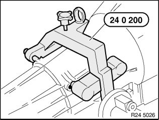
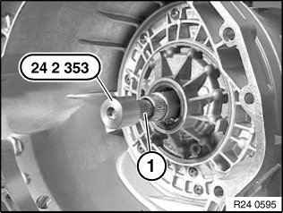
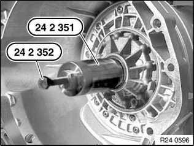
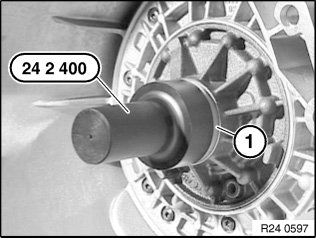

24 31 011 Replacing Torque Converter Flange Shaft Seal (GA6HP19Z)
24 31 011 Replacing torque converter flange shaft seal (GA6HP19Z)Special tools required:
Necessary preliminary tasks:
^ Remove automatic transmission.
Important!
After completion of work, check transmission oil level.
Use only approved transmission oil.
Failure to comply with this instruction will result in serious damage to the transmission.

Secure transmission with special tool 24 0 200 to assembly stand 00 1 450.
Remove torque converter.
Note:
Read and comply with note on installation of transmission retaining bridge.

Attach special tool 24 2 353 to drive shaft (1).
Screw in special tool 24 2 351 until it is firmly connected with shaft seal.

Screw in special tool 24 2 352 to remove shaft seal.

Oil sealing lip on shaft seal.
Drive in shaft seal (1) with special tool 24 2 400 as far as it will go.